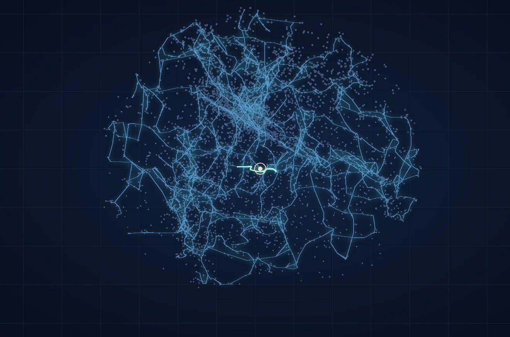

SPRC 027
z = 0.04835
Interactive research supplement
Explore the 3D environments of seven polar-ring galaxies with Voronoi tessellation and DisPerSE filament reconstructions.

Seven galaxies with z ≥ 0.02
Voronoi cells partition the local distribution of SDSS spectroscopic galaxies. The inverse volume of the target cell provides a local density estimate.
The 3D skeleton traces the surrounding filaments. Each scene shows the fiducial reconstruction within 50 comoving Mpc at a persistence threshold of 3σ.
This site is an interactive visual supplement to the manuscript submitted to Astronomy & Astrophysics. If you use the results or visualisations, please cite the manuscript.
Kompaniiets, O. V., Pastoven, O. S., Dobrycheva, D. V., Hetmantsev, O. O., Vavilova, I. B., Izviekova, I. O., & Vasylenko, M. Yu. (2026). Can integrated photometry and large-scale environment constrain the formation of polar rings in galaxies? Submitted to Astronomy & Astrophysics.